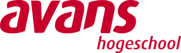
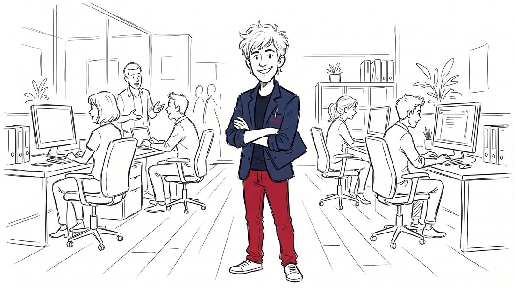
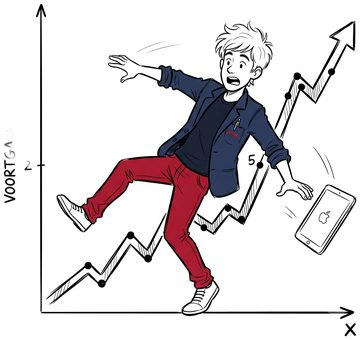
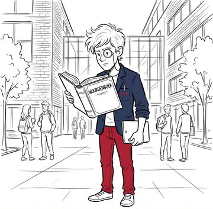
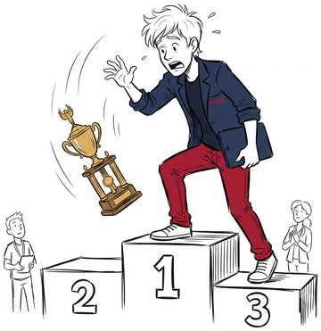
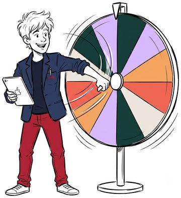

FPE Leer en Informatie Programma
Het speelse kennishoekje van team Ondersteuning — gevoed door onze eigen documenten. Blader door het jargon, duik in onze successen, of laat het rad bepalen wie er los mag tijdens het overleg.


Upload gewoon je LinkedIn-download (tabblad "Statistieken", en indien aanwezig "Nieuwe volgers") — die wordt automatisch per kwartaal opgeteld, inclusief volgersgroei. Wil je zelf een lijstje corrigeren of aanvullen, dan werkt ook een eigen Excel-bestand (kolommen: periode, weergaven, reacties, comments, klikken, reposts, nieuwe volgers — klikken en reposts zijn optioneel). Nieuwe periodes worden toegevoegd, bestaande periodes blijven staan — en het lopende, nog niet afgeronde kwartaal wordt automatisch buiten de cijfers en grafieken gehouden. Deze app laadt de reeks automatisch vanaf GitHub (fpe_linkedin_cijfers.txt) — wil je 'm permanent bijwerken voor iedereen: upload je LinkedIn-export hier, controleer/corrigeer eventueel in de beheertabel hierboven, download dan als .txt en upload dat naar de repository.
Van MJP tot doorwerker — klik een term om de vertaling te zien. Of test jezelf in de quizmodus.

Begin met typen om een afkorting op te zoeken.
Deze app laadt de lijst automatisch vanaf GitHub. Wil je 'm bijwerken? Download 'm hierboven, bewerk 'm lokaal, en upload het resultaat als fpe_woordenboek.txt terug naar de repository.
Schitterende Successen en fonkelende flaters uit onze eigen jaarmagazines — willekeurig opgediept. Perfect voor de vrijdagmiddag-chat.

Klik op "Verras me" voor een verhaal, quote of mijlpaal.
Deze app laadt de lijst automatisch vanaf GitHub. Wil je 'm bijwerken? Download 'm hierboven, bewerk 'm lokaal, en upload het resultaat als fpe_successen.txt terug naar de repository.
Twee minuten losmaken voor de agenda begint. Gebaseerd op onze kernwaarden en actuele thema's uit het MJP.

Deze app laadt de lijst automatisch vanaf GitHub. Wil je 'm bijwerken? Download 'm hierboven, bewerk 'm lokaal, en upload het resultaat als fpe_overlegvragen.txt terug naar de repository.